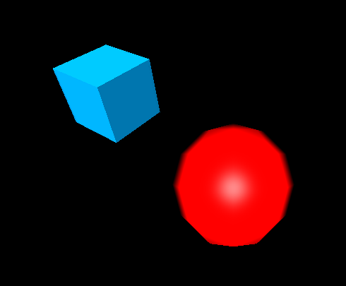

Whitestorm.js is a framework built on the top of Three.js technology, enhanced by features such as a built-in Physics engine — a modified Physi.js that acts as a wrapper around Ammo.js (Bullet Physics ported to JavaScript) with usage of web-workers technology — and a plugin system providing useful modularity. In this article we show how you can get started with Whitestorm.js.
Environment setup
Whitestorm.js can be used in Node applications, and included in client-side projects either manually or as a bower component. Let's look at how we can do this.
Node
- Run
npm install whitestormjs. - Import the whitetormjs module to your app and start using it, as demonstrated below:
import * as WHS from 'whitestormjs';
const world = new WHS.World({
background: {
color: 0xDDDDDD
}
});
// ...
Bower
- Run
bower install whitestormjs - Include whitetormjs in your app as follows:
<script src="bower_components/whitestormjs/build/whitestorm.js"></script>
Manual
- Make a copy of the WhitestormJS library file in your app directory.
- Include a
<script>element in your HTML<head>(or after your<body>) to apply the Whitestorm JavaScript to your HTML:
<script src="{path_to_lib}/whitestorm.js"></script>
Creating a basic Whitestorm app
Let's look at how we can create a quick sample Whitestorm app.
Getting started
- Create a new
index.htmlfile in a new directory. Use our simple template if you don't already have one handy. - Remove any content that you might already have inside your document body (like the
<p>element in our template above.) - Follow the Manual insrtructions above to apply the Whitestorm library to your HTML.
- Create a new
<script>element just below the existing one, in which to write your app code.
Creating a world
Whitestorm has a global WHS object that stores all of its functionality. To start off with making a whitestorm app you need to create a WHS.World object, which represents the app's 3D scene. This allows you to set parameters of the scene like camera position and gravity, and it also processes any other objects added to the world (like spheres, for example — objects inside the scene can be considered children of the WHS.World object).
Add the following code inside your second <script> element:
const world = new WHS.World({
stats: "fps",
autoresize: "window", // Call autoresize when app window is resized.
gravity: {
x: 0,
y: -5,
z: 0
},
camera: {
z: 50
},
container: document.body
});
The members set inside this object are as follows:
stats: Declares whether you want to display stats while your app is running. Options are"fps"(frames per second),"ms"(milliseconds elapsed),"mb"(megabytes downloaded), or booleanfalseif not required (which is also the default). Note that you'll see two stats boxes, one for the scene rendering and one for the physics engine.autoresize: Declares whether you want the Whitestorm app<canvas>to resize when the browser window is resized ("window"), when its container is resized ("container"), or not at all (booleanfalse, which is the default).gravity: Sets what gravity you want to act on objects in the scene, in thex,y, andzdirections. The default is 0 in all directions.camera: Sets the position and other properties of the camera that will be viewing the scene.container: Sets the HTML DOM object that the Whitestorm app's<canvas>will be appended inside on the page. The default isdocument.body.
Note: See the Whitestorm reference for more information on WHS.World features.
Creating a sphere
Whitestorm has available a number of primitives available for creating common shapes in the world, which mostly act as wrappers around Three.js primitives. WHS.Sphere for example is analogous to Three's THREE.SphereGeometry, and is based on WHS.Shape — a class that wraps the Three API for working with meshes.
Let's create one now. Add the following below your previous code addition:
const sphere = new WHS.Sphere({ // Create sphere object.
geometry: { // Create a THREE.SphereGeometry(3)
radius: 10,
widthSegments: 32,
heightSegments: 32
},
mass: 10, // Mass of physical object.
material: { // Material
color: 0xff0000,
kind: 'phong' // THREE.MeshBasicMaterial
},
pos: { // Position vector.
x: 0,
y: 10,
z: 0
}
});
Here we are specifying:
geometry: Sets geometry information about the object; in this case we need to specify a radius for the sphere, plus the number of width and height segments for the sphere, which basically dictate how smooth the curvature will be (a higher number means smoother but also more expensive to render, and vice versa). 32 gives you a nice smooth curve.mass: Sets the relative mass of the object, which will for example have an effect on gravity's pull on the object.material: Sets the type of material we want to cover the surface of the object with. Here we are specifying"phong", a kind of shiny material that allows us to see the shape of our object easily.pos: Sets the initial position of the object on the scene, as anx,y,zposition vector.
Note: See the Whitestorm sphere documentation for more information.
Adding a cube
Having one shape on the scene is a bit boring, so let's add a cube (box) as well. The Box object is analogous to the THREE.BoxGeometry primitive. Put the following code below your existing code:
const cube = new WHS.Box({
geometry: {
width: 10,
height: 10,
depth: 10
},
mass: 0,
material: {
kind: 'phong',
color: 0x0095DD
},
pos: {
x: -20,
y: 10,
z: 0
},
rot: {
x: 0.75,
y: 1
}
});
The Box primitive works in a very similar way to the Sphere primitive — you can see familiar features above such as geometry (here we are providing a width, height, and depth, not a radius), mass (we've given it 0 so it isn't affected by gravity), material, and pos. There is a new feature here — rot, which specifies how much rotation to give the object around the different axes.
Note: See the Whitestorm box documentation for more information.
Adding a light source
At this point, we still won't be able to make out an awful lot because our world has no light. To do this, Whitestorm provides simple objects for adding light sources (see the light reference). To add a directional light, add the following tothe bottom of your code:
const light = new WHS.DirectionalLight( {
light: {
color: 0xffffff,
intensity: 2
},
pos: {
x: 0,
y: 0,
z: 50
}
});
First of all, we specify the base color of the light and its intensity, inside the light property. Second, we need to specify a position vaue, inside the pos property. This behaves a bit differently in this context, as it doesn't specify a single point for the light — instead, it specifies a direction for the light to travel in. This light is a solid sheet of light rays all travelling in the same direction, kind of like the sun. In this case, our "sunlight" is travelling from (0,0,50) to (0,0,0).
Making things happen
Nothing will happen yet; you still need to add your sphere, cube, and light to the world, and start the app rendering. The following four lines will do this — add them to the scene now:
sphere.addTo(world); // Add Sphere to world. cube.addTo(world); // Add cube to the world. light.addTo(world); // Add light to the world. world.start(); // Start animations and physics simulation.
And that should be it — try saving and refeshing your code now, and you should see something like the following (with the ball moving down the screen due to the gravity in the y direction):

Note: You can check out the finished source code for this demo on GitHub (see it running live also).
Components & plugins
Almost every whitestorm.js class is a component. Box, Sphere, Tetrahedron — all these are basic components, analogous to simple Three.js geometries.
Adding custom components is possible, and very welcome. To develop your own plugin/component you have to follow these instructions:
- Make a new repository
- Install Yeoman using
npm install -g yo - Install the Whitestorm.js plugin generator using
npm install -g generator-whs-plugin - Run
yo whs-pluginto generate a new Whitestorm plugin template - Edit the files in
srcfor your needs. You will see already defined plugin source there; just change it as you want.
Playground
the Whitestorm Playground allows you to create a basic whitestorm app without downloading WhitestormJS or setting up a project — ideal for experimentation or learning. You can also share your app with others by clicking the “share” button and then you can share it on Twitter or Facebook, or just copy it to your clipboard.
Conclusion
The Whitestorm.js framework is suitable for developing complex 3D browser games that rely on calculating object collisions, and other such physics emulations. Its flexibility allows you to use its API without the parts you don't need — for example you can create games and other apps that don't need physics simulation using whitestorm.light.js, which doesn't include any of the physics code, so is much more lightweight than whitestorm.js.
See also
- WhitestormJS website / API
- Github (Feel free to contribute)
- Playground
- Test of using whitestorm.js with webpack